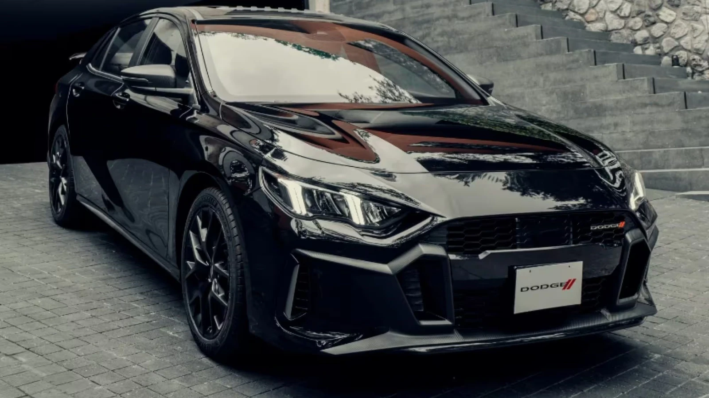
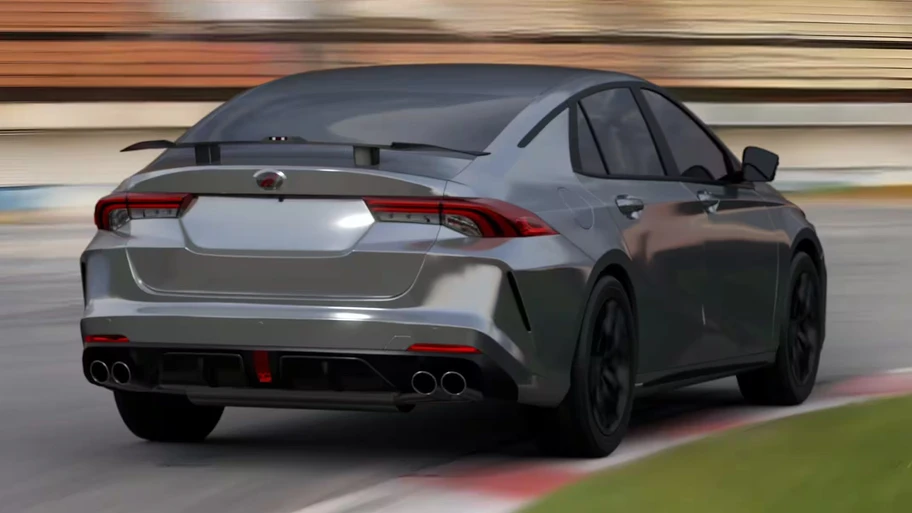
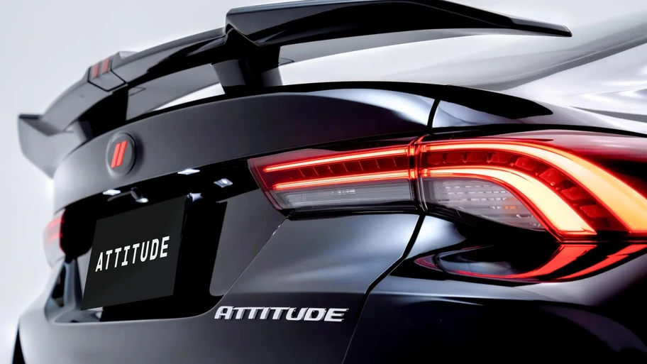
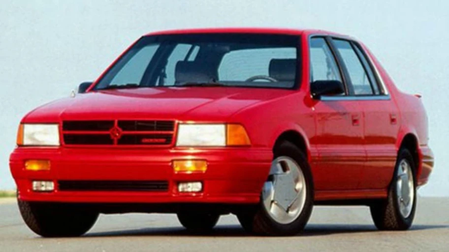

Dodge revive los Road/Track de cuatro cilindros turbo en México con el nuevo Attitude R/T 2025
Estas siglas, que fueron sinónimo de potencia turbo durante los 90, están de regreso, aunque no como lo esperabas.

En un movimiento sorpresivo, Dodge sorprende al realizar ajustes en su alineación de productos y es que la marca anunció que a partir de ahora el Attitude recupera las gloriosas siglas R/T añadiéndolas directamente a su nombre, es así, que, a partir de ahora, este sedán pasará a llamarse Attitude R/T.
¿Y hay algún otro cambio? La respuesta se reduce a un no, ya que todo se mantiene igual con respecto a lo que veníamos viendo en este modelo. Es así, que el nuevo Dodge Attitude R/T mantiene su oferta compuesta por las versiones SXT, Sport y GT.

La marca no dio detalles sobre este cambio de nombre, pero tal vez, se deba a dos motivos. El primero para marcar mayor distancia con respecto al Attitude previo que era un modelo mucho más citadino. Y la segunda, precisamente, para destacar el perfil más deportivo de la nueva generación.
Curiosamente, este cambio de nombre viene cargado con un toque de nostalgia y es que después de muchos años, vuelve a ofertarse un Dodge R/T con un motor cuatro cilindros turbocargado y es que cabe recordar que, sin importar versión, este auto es propulsado por un 1.5L turbo capaz de entregar 168 hp y 184 libras-pie de torque. La transmisión es una automática de doble embrague de 7 velocidades y hace el 0-100 km/h en 6.95 segundos.

El primer automóvil con versión R/T (Road/Track) en México fue el Chrysler Spirit R/T, lanzado en 1991. Aunque el Chrysler Phantom también tuvo una versión R/T, esta llegó posteriormente. Esta fórmula sería continuada con el Chrysler Stratus R/T (posteriormente Dodge) y finalmente esta saga de los R/T turbo en México culminaría precisamente con la salida del Stratus R/T de segunda generación en 2006.
Si bien, las siglas R/T todavía se han mantenido en la oferta de Dodge en modelos como Durango, Charger o Challenger (todos con el Hemi V8), no se puede pasar por alto que después de 20 años, vuelva a ofertarse un R/T des cuatro cilindros turbo en México.

Para más informaión, puedes acceder a la funete original: Noticia de Dodge Attitude 2025 en Autocosmos